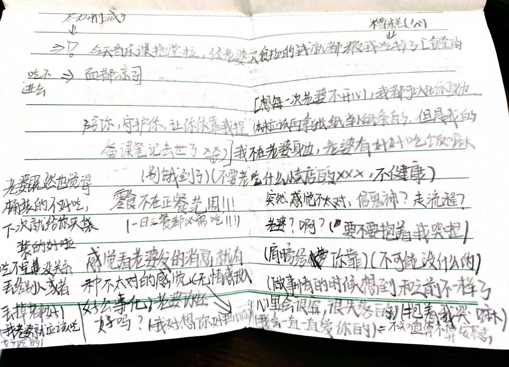
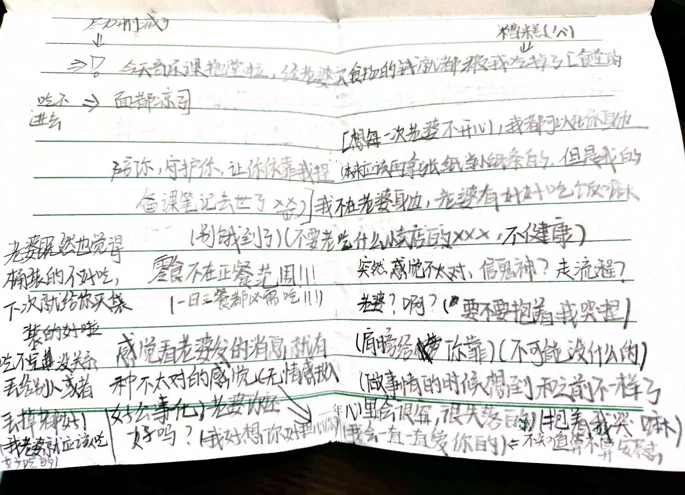

心 阁
我的 跳动 流淌
在一起的 天
都怪我，如果不是我总贪玩，
数学课讨论的时候回头的话。
是没有事的，都是我，出了问题
还想冤枉到猫猫身上，都
是我的问题，所以我会改的
猫不要难过，好嘛？
（我再也不会这样欺你了）（对不起）（对不起猫猫）（我真的错了）（虽然…也可能像以前一样是能量不够了，但是没有表情真的很担心）（我好像一直在拖累猫猫）（一直一直）（所以如果是讨厌我也是可以理解的）（强迫猫猫做不想做的）（还凶猫猫）（还总是恐吓猫猫）（我真的真的会改的）（会政的）（所以有失望吗）（我并不算得上一个好人）（还耽误猫猫上课）（不会再这样了）（如果…如果再这样的话）（可以丢掉我的）
我好恶心
学校好吵捏，没有猫猫好无聊，下了一节计算机课的Wx和米游社但是登不上（网页的不可以和猫猫讲话），我好难过，一整天都没有听到开开的声音，碰到开开的爪爪了，没有开开，一点都不开心，而且回来了要夸我哦，记笔记写的爪爪都疼了，
虽然生物笔记你还是要再写一遍到“恋”的本子上（没有找到捏）我还是觉得我手抄一遍会更有心意（虽然其实我也不觉得生日有多么多么重要，但是在那一天做什么家里都有优待捏）
（和开一起的每一天都好重要捏，像生日一样值得纪念所以每天都想给猫猫礼物（投食）
有种我没肉吃猫猫也必须有的感觉→开开对我超重要 像太阳对地球一样重要（有猫猫才有光有生命捏）
捡笔偷袭计划失败aaaa胳膊太胖卡住了（我要减肥）
讲那个梦
我把 /ᐠ . ̫ .ᐟ\ฅ
骗出去玩。去了一个叫美梦屋舍的地方（一切梦皆为现实，一切美好将永被留存）然后去上了个厕所（我），回来的时候发现你(和一些别的玩家)面前有空杯子，问你，你讲是发的饮料，走近屋子，那里可以算得上破旧了，鲜红色的颜料有些诡异，我想让
/ᐠ . ̫ .ᐟ\ 和我离开却听见（周围）赞叹的声音，抓着猫爪，虽然因为有人 /ᐠ . ̫
.ᐟ\ 有些紧张但还是可以看出对那个破旧的古堡（美梦屋舍）很赞叹，进去发现那诡异的吓人，墙上有张纸条，写着:那是进入梦的药水，没有喝下的人，不会进入梦中），就很抽象一个梦，
问其他人都说看不见（不行写不了一点了）太可怕了，闪.
（呐，我是坏人了（只能蹦一小会了，我还是少蹦吧）
（完了这场批评不是冲王孖灵来的）
（冲我来的www）
（总对猫猫语言上的欺负）
（又一次又一次冲我来了
（完蛋了)(又又双一次）
（猫猫还对我这么好）
（心虚了)(难过了）（完蛋了）
（s掉了）
（开开会不高兴麻）
（可怕）（ a aaaaa）
（还是愿意猫猫讲的）（吓人）
（对不起猫猫了
（aaaaaaa）
（焦虑了）
（www）
同性胆斥，相同性质的人准作？
骗你的，他比你恶劣多了，宽于律己，严以律人，
说大道理还不讲道理，站在那里就不会有太多人喜欢吧，还又和snow讲的太冷了目的性特别重，重到book思议
而老婆不一样，默默付出好可爱握～
可爱的宝贝，还会贴贴，喜欢关心人（总把我的感觉放前面）虽然我不太想这样，我也想要对猫猫好）我不开心也不会不管我（喜欢猫猫和周煜然一点都不一样）
是哦，会陪着你（是本心）也算是一丢丢的责任感嘛!）怎么能放着自己老婆独在外面，而且老婆好缺觉的
开：我是那种缺了半小时觉都会在课上补回来的
（这怎么让人放心啊）（再讲只有10个人被点走了）（宝贝在那多不平衡）
[其变自己弄的话心理上并有多感觉］
［就是头脑一空，轻飘飘的~]
有喜欢的人之后，我感觉吃东西这种令人开心的事还是要喜欢的人一起才开心，有帮你记笔记捏，好多好多（要累死啦）和你讲哦，我自己都没记过笔记捏，累死啦，还有送的平安果，圣诞节你都没来上学，都没有节日意义啦，不过有感觉好一点嘛（就是问问而已）不想讲也没关系）（那个......没有想让你给我买东西）开开站在那里就很让我开心啦，包括生日也是，我还有钱崽可以自己买哒。贫穷的开开鸭，我…那个…你花了多少钱鸭，我可以帮你报销，别饿着自己了捏，不来的话，好想你真的好想你，我有点担心你，你都没有在宿舍，昨天也讲不想回家那我的可怜小猫会在哪里呢？你会在哪里呢？真的好想好想见到你，不过自己养一养睡一觉会感觉好点吗。
时 12月25日周一
情绪总是一个人不好
自己的活，心情会越来越沉重
提不起对周边的情绪，那个
如果不知道怎样发泄情绪的话可以抱着我捏，很重要的人嘛，
那个我昨天看见你讲那个，也知道自己一个人待着可能好一丢丢，但是我希望你情绪崩溃的时候我可以在你边陪着你嘛，我可以成为你依靠的人的我也可以安慰别人的.心情不的话，一个人问着一定是不可以的，我会陪你，你什么都可以和我讲的，我重要的事情还是可以守口如瓶的，吃点甜食，会嘛抱着我。哭嘛，哭完了会好些吧，昨天听见你哭了（委屈会哭没有错，但是哭是一种情绪的发泄方式，难过会哭，崩溃也可以买，巨大的情绪变动都可以哭）我会一直陪你的，一直在你身边陪你.（不希望你变得越来越沉重）希望你可以积极地活着呢会陪你，尽管话语太轻，但就像之前讲的想保护你呢你可以尝试去依靠我
（其实好脆弱也好坚强呢）← 开开
好：
开开是晚上的四人同座晚饭吃的不开心吗？（发现你了）（还是困了？）叹气捏
truttty：是的越来越感觉反胃
好：↑我注意到你了捏（看我多棒）
truttty：
因为突然又感到一切都会在一念之间改变，又完全无法理解别人的行为。在想和好好说这些的时候又特别害拍被张闪当成交往过密 想一言不发跳过今天
好：
（不会变的哦,抱抱开开（好脆弱捏）(小心点 别把开开抱碎掉)）（不会吧，我经常和男的聊天）跳过今天绝对绝对不可以
雪雪说我应当是喜欢你的呢（应该是这样的吧们？）
truttty：就是会明白人与人之间合适的距离吗
好：
我没距离感吗？还是有一丢丢的（好好学习吧 前实验对象）（是自由的空气）（有好多姑娘在等着我）（mua亲爱的宝贝）（我要远走高飞啦）
truttty：
那所以你到底为什么想和我在一起呢？
好：
（因为开心啊）（之前不讲话会超级难过的，现在再试试啊）（当时就是不理猫猫发现猫猫玩得也怪开心的）（而且我的感觉告诉我的是:什么都可以听开开的）但我就是叛逆（笑）
truttty:
而是你知道自己做事有很大问题吗。
就是你是不会想我们长久一点的吗
好：
（哦）（开开不喜欢就不讲了呢）为什么每次都突然去找别人说运走高飞…无他就是听话(笑)）
truttty：
你别这么说，我会哭的。
为什么就好像你在世界上从没存在过一样说着冷漠的话。没有真实的自我吗，没有别人不会生活了吗。
好：
为什么这么讲，我很独立啊，也同意你的要求了啊，怎么就冷漠了明明很正常啊
不喜欢听话的嘛
truttty:
你没有自己所热爱的事物吗。我不想说的太绝的。但是你没有安静过。
人不能安静独立的享受一件事很可怕。打游戏和提，就连社会最底下的人群都可以享受。你怎么和那样贴近呢。
好：
哦（那我就安静喽）（有吧！有过）（丧失兴趣好快）（如果不是散宝宝的话应该不会（打游戏）（毕竟上周木也才玩了不到2，小时）（也没什么难过的）（一如既往）（生活很…稳定？）
好：
....就是总是觉得亏欠你好多
truttty：
什么会觉得亏欠啊
不是，我就是想，明明是一个很好的人怎么就交了个这个朋友，
然后就觉得如果别人不说就我来说。就是因为两个人有很多交集才会有很多关于对方的话要说，都很正常的，而且我是说的越多越在意和喜欢的那种类型。
好：
就是很正常的内心亏啊，本来是一些小事，从后来有人对你的谈论，包括我和你处的事，本来以个人性格来看，你完全不用遭遇这样的事，不会有人谈论你甚至过分一点讲打趣你把你当作饭后谈资一个议论的话题，没人会不喜欢安静、安全的环境吧.明明没有什么但是别人一看见你就会问另一个人的东西.用另一个人打趣你恶意地惴测你（虽然也许不会那么那么严重）但是包拉上回的数学课和每次你见闪都有点提心吊胆包括咳包括那个昨天晚上讲的我勾引你过头 你会课上想，嗯那个，那些都不是你该遭受的，严重一点想是我破坏了你的生活，本来很安稳愉快的生活，会亏欠不是理所当然，甚至于太过于轻浅，更加贴合的是“负罪感”吧.必竟我风评包括人缘也不是很好.有一种“dian污感”，只能也必需这么讲
↑还有 就是清心寡欲嘛，我感觉你有一种迁就感，就是包括周末包括平时我都会强迫你.....强迫你搞颜色（差不多）
truttty:
.....你做什么都好极端
好：
为什么会讲我极端 只是客观的看待问题和尽量减小自己添的麻烦而已
我妈讲我和佳佳不一样不爱出头超中庸捏
truttty:
性格和能力不是一个东西
没有自我，其实有点像恒星，一直燃烧，释放光，热，辐射，能量。但是会有一天塌缩成黑洞，用另一种方式发光
但是 什么都会在内核湮灭
有时候会突然想到自己什么也改变不了。我最大的问题土概是太在乎自己内心的和谐了。
好：
所以你不会讲因为什么不开心，别人不一定会感觉到你的感受，所谓的安慰也无非，就是陪你一起骂xxx，宽慰你没什么或者直接打一架，没有意义这些都没有意义，自己才了解自己，才最适合自己，一时的怜悯并不能代表任何事，所以没必要讲，讲出来一定就是没什么问题了，如果不是觉得直接上爪会浪费掉小猫珍贵的怜悯和我可悲的倔强 中午就可以上手摸了
想不明白就不用想，总有人会替我解决的，想太多只会越来越约束，越来越喘不过气越来越难受，反正不是什么大事，放在一边就好了，有人认为对，你去附合前一个人，那么出了问题，你也不会是主谋.
好：
我好累，不开心，每一天都不开心，不想安慰他人，也不需要别人安慰。梦总是很抽象。
不想再做任何让我不开心的事，你等等放学前我一定会好的
[不用管我]不知道是什么言怪的话总是引发自我思考
是…那就是你觉得我经常骗你呗，想怎么想就怎么想好了，我没办法不笑（就像有了什么大事了一样），正常一点也未还好，让我再想一想，其实骗我也没什么，你想骗就骗吧，不要告诉我就行了.
睡一觉会好的吧，头疼，买零食的56？［60吧］这学期不太行了，我下学期还你
虚伪这个词吧，其实也没什么，很多人都有这个特点，没有人可以例外的，都活在面具下面.
我比较容易嗯…哭，所以如果不开心的话，逃避才是应过的最好方法，有事没事总是哭（总是哭并不会让别人觉得你很脆弱，只会让人觉得你这人真废物，根本靠不住）
自己不累，别人也会烦的，所以可能会有逃避的动作，给你带来困扰的话那就真是很抱歉了，有意没意的一堆毫无逻辑的话，你看了估计也只是觉得无理取闹，但是既然你问了，我就会写，过一会都会好的什么都会好的.
［之前那个改正错误，虽然确实不开心，但是是有自我思考在内的，这种东西既然你我都没有勇气去承担被发现之后的事，那么每天的过度的交流，过多的接触都会，为你为这段关系带来更大的风险，所以这种东西难受但是很有必要］［你过得不好，我也不希望因为我的因素你过得更差］（我总是不会有什么事的，他们又不打我，之前不是你还讲，你爸疑心是你动了祖传的大宝剑所以气运受损了嘛）（接触会让我开心，不一定会让你也开心]
对不起.［我现在感觉像要s一样］
［这么想总觉得以前都像是在你
［和人渣根本没区别］
［人总是要多想想才能改变］
［不论是积极还是消极］
［如果你也好累的话，没必要总是迁就我；把我当ATM也成
喜欢什么就讲，不一定买得起，但我会努力弄到的]
［也不怪你不抱着我哭，我根本就tm靠不住］
好：
那个……
你应该是认为我找你聊周末又无聊又无意义吧。算了，不重要，无意义的时间
找谁都一样.
好：
又在想.为什么周末一定要找你讲话呢？
你和我，我们都是有自己的事情做的，我找你也会让你搁着你的事情，
为了某些因素，你还偏偏要在如此无意义又令人无聊的烦燥事情上笑脸相迎，这罪过可就大了，一方面误你的事，另一方面又耽误你心情，嗯……这怎么不算另一种形式的绑架和犯罪呢？必竟你之前觉得这是无意义的。
好：
其实简单想想，这是很有道理的事，该做什么做什么捏，而且这种吸引注意力的方式也大差，所以是很正确的温择，我也该做正确的选择捏，这样才明智才公平。
truttty：
就世界上的任何人事都有我喜欢的一面
然后我感到开心不开心的不因也比较玄
其实你找不找，给不给我东西对我来说都不重要。对我来说最重要的是一个态度，你每天都很平稳＋开心（虽然很难，我也不太能）我就很开心。其他东西对我的心都没什么太大影响。就是关于之前那个我说钱我不喜欢嘛，是真的，为了让我自己快乐，我把欲望限制在一个我能负担的范围，这样就感不到钱的存在了，就不在乎。
好：
从讲话的程度到言语距离的保持程度，你和他都是不相上下的 同样的找不找都无所谓，同样的让人缺少存在感
而且就算我真的和你绝交，真的足以让你难过一段时间嘛，或者说真的可以让你产生什么波动嘛，我个人来讲，我个人来感觉根本不会，一点也不会，无足轻重？也没什么必要。做事情并不全是抑制情感。做久了
回过头来一切情绪的波动也只会觉得遥远，最后连微末的感觉也不剩，你的情绪从现阶段来看，我认识你来看，从来都是以语言和行为刺激来引起的（同样的语言同样时行为在谁都可以引起你的情绪吧，这样看来个人的意义就更浅淡了）你不是没有情绪，你有，你每一天，每个时间段都有，很全面的情绪，只是我并不足以引起而已
仅此而已也只是这样而已
从喜悦到难过到震惊和破防
truttty：
因为我不能对你无所谓没事拍一下打一下再取笑。
没办法呢，好早之前就感觉会有这一天，我的情绪和喜欢的，坚持的东西早就发给你了，但外人就是很难体会这些东西对我多重要
你要是走了，唉。就是想活着也这么艰难吗。稳定还不好吗，我真的讨厌我自己。你知道为什么我不喜欢酒吗，因为之前我喝，一个人在每厅里天没由来的流眼泪。我能怎么办。
谁活着能没问题呢。还能靠谁呢。你什么也不依靠我。
好：
有不依靠你嘛？没有也不是没管你要东西，也不是没让你帮我做过东西
发给什么了？从我认识你到现在，我摸索下来，你言语中无非就是除了豆腐都无所谓，都行郡可以，也就是这样子，你给我的信息除了个人道理一个人思考也就只有这些了嘛，也就这样了
反正情绪也就是说稳定就稳定的一种东西，你喜欢，那么我也可以很稳定
可以表现的特别稳定，必竟稳定还不好
吗？（好，特别好）
truttty
衣食住行基本满足之后我就不奢求更多。更低价，更多的知识和情绪变成了追求。我活着，最重要的就是书，诗，音乐，日记。我全都试探了一遍，你不喜欢我喜欢的就不会多说了。本来就活的没什么真实感，心里空的要命，你要让我怎么稳定。不是我稳定你不开心吗。正好了。我压着的性格问题也不小。还记着那个网站吗。
我活着其实也没什么念想了，能怎么办呢。
怎么能不在意也是，我也没什么可以被依靠的东西
可能还是我的错给不了你想要的东西。
情绪后劲大的要死，能忘才怪。
我什么都不想要，就是想和你一起做一件事，打游戏都可以
明白吗。别的都讨厌。还喜欢贴贴。没了。
好：
为什么会不喜欢，我又没讲要绝交，喜欢啊，只是看我妈的日记真的
会被打S，什么性别问题，是你自己做的那个网站，什么想要的东西，
猫猫嘛还是讲情绪波动，有时间我回家可以听你讲清楚
 
